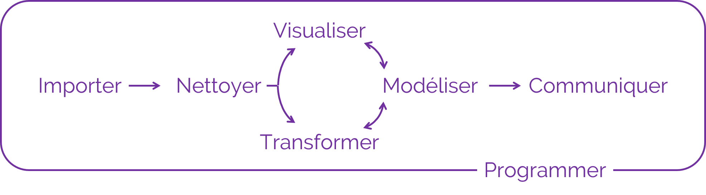

Introduction
Qu’est-ce que R ?
R est un langage de programmation et un logiciel utilisé pour réaliser des calculs statistiques et des graphiques.
R a été conçu en 1992 par Ross Ihaka et Robert Gentleman comme implémentation open source du langage de programmation S et publié en 1995.
Depuis, les utilisations de R se sont largement diversifiées :
analyses statistiques et workflows de data science
visualisations graphiques avancées
rapports automatisés
applications web
diaporamas, livres, et pages web
Pourquoi (pas) R ?
Avantages :
libre, open source, et plateforme indépendant
large variété d’extensions proposant des fonctionnalités supplémentaires
compatible avec d’autres langages de programmation
puissant pour l’analyse et la visualisation de données
très large communauté en ligne
souvent expérimenté comme étant simple à coder (pour un novice)
Pourquoi (pas) R ?
Inconvénients :
performance : évolutivité, mémoire et vitesse
courbe d’apprentissage importante
potentiels problèmes de sécurité (applications web)
souvent expérimenté comme étant étrange à coder (pour un expert)
R versus RStudio

Inspiré de Modern Drive
RStudio est un environnement de développement intégré (IDE) open source
IDE pour R le plus populaire depuis plusieurs années
de nombreuses fonctionnalités et extensions pour faciliter les workflows (suivi de version, sommaire, add-ins, …)
projets R et RMarkdown/Quarto
Mise en pratique : installer R et RStudio
Télécharger et installer R depuis
Télécharger et installer RStudio Desktop depuis


Console et script
La console vous permet de taper du code et de l’exécuter.
le code tapé dans la console sera perdu quand vous quitterez R …
… ce qui est problématique pour sauvegarder et partager votre code !
- Un script, à la manière d’un document texte, vous permet de sauvegarder votre code et de le partager.
Dans la console, le code est tapé à la suite de l’invite de commande
>.La console affiche la sortie (le résultat) du code à la ligne suivante (débute par
[1]).Le code exécuté à partir d’un script s’affiche dans la console.
Mise en pratique : console et script
Ouvrez R, tapez les commandes suivantes et appuyez sur
Entréepour les exécuter :"Ceci est du texte"2 + 2
Ouvrez RStudio
Ouvrez un script (
File > New File > RScript)Ajoutez les deux commandes ci-dessus et exécutez-les en plaçant le curseur à la fin de la première ligne et en cliquant sur
Run(ou en utilisant le raccourci clavierCtrl + Entrée)Sauvegardez le script (
Ctrl + S)
Les commentaires
Les commentaires servent à :
inactiver du code qu’on ne souhaite plus exécuter
ajouter des commentaires pour expliquer notre raisonnement
Dans R, les commentaires sont codés par un hash #.
Tout ce qui suit sur la même ligne ne sera pas traité comme du code.
Par convention, nous utilisons :
#pour commenter du code##pour ajouter des commentaires :
Les commentaires
Prenez dès maintenant l’habitude de commenter vos scripts.
Cela les rendra plus compréhensibles - pour vous et pour vos collègues !
Les commentaires peuvent vous servir à créer un en-tête (quoi ? qui ? quand ?)
Les commentaires servent également à structurer un script et à afficher une table des matières, en ajoutant quatre tirets - après un titre :
Mise en pratique : commenter un script
- Ouvrez un nouveau script et renseignez les informations essentielles (quoi ? qui ? quand ?)
- Ajoutez deux titres de sections
Mise en pratique : commenter un script
- Ouvrez un nouveau script et renseignez les informations essentielles (quoi ? qui ? quand ?)
- Ajoutez deux titres de sections
Mise en pratique : paramètres de RStudio
Cliquez sur
Help > Cheatsheets > RStudio IDE Cheat Sheetet parcourez le document qui s’ouvre.Cliquez sur
View > Panes > Pane Layoutet arrangez les panneaux selon votre préférence.Cliquez sur
Tools > Global Optionset parcourez les différents éléments.


Organiser son travail
Les projets R
Les projets R (ou projets RStudio) vous fournissent un workflow robuste qui vous servira par la suite :
ils reposent sur l’idée que tous les fichiers associés à votre projet devraient être stockés dans le même dossier
aide à (re)trouver les fichiers
augmente la reproductibilité
facilite la collaboration
le répertoire de travail est défini dans le dossier où se trouve le fichier
.Rprojle répertoire de travail est clairement défini
indépendant des paramètres du système d’opération et de l’arborescence des dossiers (propre à chaque utilisateur)
limite les changements de répertoire lors de collaborations
Mise en pratique : créer un projet
Pour créer un projet R : File > New Project …

Mise en pratique : créer un projet


Arborescence
Une bonne organisation de vos fichiers avec une bonne structure de vos dossiers vous évitera de perdre du temps à chercher des fichiers.
La structure proposée ci-dessous est applicable à une bonne partie des projets :
üìÇDonn√©es brutes : donn√©es que vous r√©cup√©rez au d√©but du projet
üìÇDonn√©es modifi√©es : donn√©es g√©n√©r√©es en cours d‚Äôanalyse
üìÇScripts : code utilis√© pour l‚Äôanalyse, pour g√©n√©rer les figures, r√©diger des rapports
üìÇR√©sultats : tableaux ou fichiers de r√©sultats interm√©diaires / finaux
üìÇFigures : figures g√©n√©r√©es en cours d‚Äôanalyse et pour pr√©senter les r√©sultats
üìÇDocuments : rapports, pr√©sentations, articles, documentation
Mise en pratique : créer une arborescence
- Cliquez sur
New Folderpour ajouter des dossiers dans votre répertoire de travail

- Créez l’arborescence qui vous semble la mieux adaptée (pensez à utiliser des nombres quand vous nommez vos dossiers pour conserver l’ordre)
Mise en pratique : créer une arborescence
- Cliquez sur
New Folderpour ajouter des dossiers dans votre répertoire de travail
- Créez l’arborescence qui vous semble la mieux adaptée (pensez à utiliser des nombres quand vous nommez vos dossiers pour conserver l’ordre)
Valeurs
Valeurs
Tapez et exécutez les commandes suivantes :
1
"Ceci est du texte"
"2023-09-11 14:00:00"
x
"x"
pi
Valeurs
[1] 1[1] "Ceci est du texte"[1] "2023-09-11 14:00:00"Error in eval(expr, envir, enclos): objet 'x' introuvable[1] "x"[1] 3.141593üí°R est un langage orient√© objet : tous les √©lements que vous manipulez dans R (donn√©es, fonctions, ‚Ķ) sont stock√©s dans des objets.
Fonctions
Mise en pratique : opérations arithmétiques
Tapez et exécutez
2 + 3.Essayez d’autres opérateurs de calcul :
-,*,/, ou^.Calculez la racine carrée de 25 :
sqrt(x = 25).
❓Quelle est la différence entre les deux valeurs 5 obtenues ?
R est un calculateur !
Fonctions

Fonctions
Fonctions
R possède une large collection de fonctions intégrées qu’on utilise comme ceci :
Nous avons déjà vu certaines fonctions dans les exercices précédents :
+, -, *, ^, sqrt(), log() sont toutes des fonctions.
Fonctions
Fonctions infixes
Opérateur unaire (fonction à un seul argument)
Opérateur binaire (fonction à deux arguments)
Corps d’une fonction
function (x, base = exp(1)) .Primitive("log")function (x, ...)
UseMethod("mean")
<bytecode: 0x00000294407c8be8>
<environment: namespace:base>[1] mean.Date* mean.default* mean.difftime* mean.POSIXct* mean.POSIXlt*
[6] mean.quosure*
see '?methods' for accessing help and source codefunction (e1, e2) .Primitive("+")function (file, header = TRUE, sep = ",", quote = "\"", dec = ".",
fill = TRUE, comment.char = "", ...)
read.table(file = file, header = header, sep = sep, quote = quote,
dec = dec, fill = fill, comment.char = comment.char, ...)
<bytecode: 0x00000294436be4f0>
<environment: namespace:utils>Corps d’une fonction
function (file, header = FALSE, sep = "", quote = "\"'", dec = ".",
numerals = c("allow.loss", "warn.loss", "no.loss"), row.names,
col.names, as.is = !stringsAsFactors, tryLogical = TRUE,
na.strings = "NA", colClasses = NA, nrows = -1, skip = 0,
check.names = TRUE, fill = !blank.lines.skip, strip.white = FALSE,
blank.lines.skip = TRUE, comment.char = "#", allowEscapes = FALSE,
flush = FALSE, stringsAsFactors = FALSE, fileEncoding = "",
encoding = "unknown", text, skipNul = FALSE)
{
if (missing(file) && !missing(text)) {
file <- textConnection(text, encoding = "UTF-8")
encoding <- "UTF-8"
on.exit(close(file))
}
if (is.character(file)) {
file <- if (nzchar(fileEncoding))
file(file, "rt", encoding = fileEncoding)
else file(file, "rt")
on.exit(close(file))
}
if (!inherits(file, "connection"))
stop("'file' must be a character string or connection")
if (!isOpen(file, "rt")) {
open(file, "rt")
on.exit(close(file))
}
pbEncoding <- if (encoding %in% c("", "bytes", "UTF-8"))
encoding
else "bytes"
numerals <- match.arg(numerals)
if (skip > 0L)
readLines(file, skip)
nlines <- n0lines <- if (nrows < 0L)
5
else min(5L, (header + nrows))
lines <- .External(C_readtablehead, file, nlines, comment.char,
blank.lines.skip, quote, sep, skipNul)
if (encoding %in% c("UTF-8", "latin1"))
Encoding(lines) <- encoding
nlines <- length(lines)
if (!nlines) {
if (missing(col.names))
stop("no lines available in input")
rlabp <- FALSE
cols <- length(col.names)
}
else {
if (all(!nzchar(lines)))
stop("empty beginning of file")
if (nlines < n0lines && file == 0L) {
pushBack(c(lines, lines, ""), file, encoding = pbEncoding)
on.exit((clearPushBack(stdin())))
}
else pushBack(c(lines, lines), file, encoding = pbEncoding)
first <- scan(file, what = "", sep = sep, quote = quote,
nlines = 1, quiet = TRUE, skip = 0, strip.white = TRUE,
blank.lines.skip = blank.lines.skip, na.strings = character(0),
comment.char = comment.char, allowEscapes = allowEscapes,
encoding = encoding, skipNul = skipNul)
col1 <- if (missing(col.names))
length(first)
else length(col.names)
col <- numeric(nlines - 1L)
if (nlines > 1L)
for (i in seq_along(col)) col[i] <- length(scan(file,
what = "", sep = sep, quote = quote, nlines = 1,
quiet = TRUE, skip = 0, strip.white = strip.white,
blank.lines.skip = blank.lines.skip, comment.char = comment.char,
allowEscapes = allowEscapes, encoding = encoding,
skipNul = skipNul))
cols <- max(col1, col)
rlabp <- (cols - col1) == 1L
if (rlabp && missing(header))
header <- TRUE
if (!header)
rlabp <- FALSE
if (header) {
.External(C_readtablehead, file, 1L, comment.char,
blank.lines.skip, quote, sep, skipNul)
if (missing(col.names))
col.names <- first
else if (length(first) != length(col.names))
warning("header and 'col.names' are of different lengths")
}
else if (missing(col.names))
col.names <- paste0("V", 1L:cols)
if (length(col.names) + rlabp < cols)
stop("more columns than column names")
if (fill && length(col.names) > cols)
cols <- length(col.names)
if (!fill && cols > 0L && length(col.names) > cols)
stop("more column names than columns")
if (cols == 0L)
stop("first five rows are empty: giving up")
}
if (check.names)
col.names <- make.names(col.names, unique = TRUE)
if (rlabp)
col.names <- c("row.names", col.names)
nmColClasses <- names(colClasses)
if (is.null(nmColClasses)) {
if (length(colClasses) < cols)
colClasses <- rep_len(colClasses, cols)
}
else {
tmp <- rep_len(NA_character_, cols)
names(tmp) <- col.names
i <- match(nmColClasses, col.names, 0L)
if (any(i <= 0L))
warning("not all columns named in 'colClasses' exist")
tmp[i[i > 0L]] <- colClasses[i > 0L]
colClasses <- tmp
}
what <- rep.int(list(""), cols)
names(what) <- col.names
colClasses[colClasses %in% c("real", "double")] <- "numeric"
known <- colClasses %in% c("logical", "integer", "numeric",
"complex", "character", "raw")
what[known] <- lapply(colClasses[known], do.call, list(0))
what[colClasses %in% "NULL"] <- list(NULL)
keep <- !sapply(what, is.null)
data <- scan(file = file, what = what, sep = sep, quote = quote,
dec = dec, nmax = nrows, skip = 0, na.strings = na.strings,
quiet = TRUE, fill = fill, strip.white = strip.white,
blank.lines.skip = blank.lines.skip, multi.line = FALSE,
comment.char = comment.char, allowEscapes = allowEscapes,
flush = flush, encoding = encoding, skipNul = skipNul)
nlines <- length(data[[which.max(keep)]])
if (cols != length(data)) {
warning("cols = ", cols, " != length(data) = ", length(data),
domain = NA)
cols <- length(data)
}
if (is.logical(as.is)) {
as.is <- rep_len(as.is, cols)
}
else if (is.numeric(as.is)) {
if (any(as.is < 1 | as.is > cols))
stop("invalid numeric 'as.is' expression")
i <- rep.int(FALSE, cols)
i[as.is] <- TRUE
as.is <- i
}
else if (is.character(as.is)) {
i <- match(as.is, col.names, 0L)
if (any(i <= 0L))
warning("not all columns named in 'as.is' exist")
i <- i[i > 0L]
as.is <- rep.int(FALSE, cols)
as.is[i] <- TRUE
}
else if (length(as.is) != cols)
stop(gettextf("'as.is' has the wrong length %d != cols = %d",
length(as.is), cols), domain = NA)
do <- keep & !known
if (rlabp)
do[1L] <- FALSE
for (i in (1L:cols)[do]) {
data[[i]] <- if (is.na(colClasses[i]))
type.convert(data[[i]], as.is = as.is[i], dec = dec,
numerals = numerals, na.strings = character(0L),
tryLogical = tryLogical)
else if (colClasses[i] == "factor")
as.factor(data[[i]])
else if (colClasses[i] == "Date")
as.Date(data[[i]])
else if (colClasses[i] == "POSIXct")
as.POSIXct(data[[i]])
else methods::as(data[[i]], colClasses[i])
}
compactRN <- TRUE
if (missing(row.names)) {
if (rlabp) {
row.names <- data[[1L]]
data <- data[-1L]
keep <- keep[-1L]
compactRN <- FALSE
}
else row.names <- .set_row_names(as.integer(nlines))
}
else if (is.null(row.names)) {
row.names <- .set_row_names(as.integer(nlines))
}
else if (is.character(row.names)) {
compactRN <- FALSE
if (length(row.names) == 1L) {
rowvar <- (1L:cols)[match(col.names, row.names, 0L) ==
1L]
row.names <- data[[rowvar]]
data <- data[-rowvar]
keep <- keep[-rowvar]
}
}
else if (is.numeric(row.names) && length(row.names) == 1L) {
compactRN <- FALSE
rlabp <- row.names
row.names <- data[[rlabp]]
data <- data[-rlabp]
keep <- keep[-rlabp]
}
else stop("invalid 'row.names' specification")
data <- data[keep]
if (is.object(row.names) || !(is.integer(row.names)))
row.names <- as.character(row.names)
if (!compactRN) {
if (length(row.names) != nlines)
stop("invalid 'row.names' length")
if (anyDuplicated(row.names))
stop("duplicate 'row.names' are not allowed")
if (anyNA(row.names))
stop("missing values in 'row.names' are not allowed")
}
class(data) <- "data.frame"
attr(data, "row.names") <- row.names
data
}
<bytecode: 0x000002943f719f68>
<environment: namespace:utils>Arguments d’une fonction
Apprendre à utiliser une fonction
Description
log computes logarithms, by default natural logarithms, log10 computes common (i.e., base 10) logarithms, and log2 computes binary (i.e., base 2) logarithms. The general form log(x, base) computes logarithms with base base.
Apprendre à utiliser une fonction
Usage
Apprendre à utiliser une fonction
Arguments
x a numeric or complex vector.
base a positive or complex number: the base with respect to which logarithms are computed. Defaults to e = exp(1).
Assignation implicite
[1] 2[1] 2[1] 0.5[1] 2[1] 2[1] 2Assignation implicite : attention !
Assignation explicite :
## l'exemple utilise des vecteurs (séquences de nombres entourées par `c()`)
quantile(x = c(5, 1, 3), probs = c(0.25, 0.5, 0.75))25% 50% 75%
2 3 4 Assignation implicite par position :
Des erreurs dans les positions peuvent poser problème :
Mise en pratique : arguments d’une fonction
Parmi les lignes de code suivantes, laquelle (ou lesquelles) retourneront une erreur ? Pourquoi ?
log(x = 1)
log(x = "1")
log(x)
log(value = 1)
log(`1`)
log(1)
Mise en pratique : arguments d’une fonction
[1] 0Error in log(x = "1"): argument non numérique pour une fonction mathématiqueError in eval(expr, envir, enclos): objet 'x' introuvableError in eval(expr, envir, enclos): l'argument "x" est manquant, avec aucune valeur par défautError in eval(expr, envir, enclos): objet '1' introuvable[1] 0Assignation et objets
Mise en pratique : assignation et objets
Tapez et exécutez
x <- 1puisx.Exécutez
x + 2.Exécutez
x <- 5puis à nouveaux + 2.
❓Pourquoi la console n’affiche-t-elle rien après l’exécution de x <- 1 ?
❓Quel rôle joue le symbole “flèche” <- ?
❓Quelle est la valeur de x après éxécution des trois lignes de code ?
❓Que se passe-t-il si vous exécutez y <- x ? Et y <- x <- 2 ?
❓Exécutez y <- 2 <- x. Que se passe-t-il ?
❓Pouvez-vous assigner une valeur et afficher le contenu de l’objet simultanément ?
Assignation et objets
Assignation et objets
Assignation et objets
L’environnement
Par défaut, les objets assignés existent dans l’environnenemt global appelé R_GlobalEnv.
L’aperçu de tout ce que vous avec défini se trouve dans le panneau d’environnement.
L’environnement
Pour supprimer un objet de l’environnement, utilisez la fonction rm().
Pour supprimer plusieurs objets à la fois, cliquez sur l’icône “balai” :

en affichage liste, tous les objets de l’environnement seront supprimés
en affichage grille, cochez les objets à supprimer avant de cliquer sur l’icône
Assigner et afficher des objets
Syntaxe des noms d’objets
De bons noms d’objets :
doivent être descriptifs (pas trop compliqués mais précis)
doivent commencer par une lettre
- ✅
val1, ❌1val,.val1
- ✅
peuvent contenir d’autres symboles comme des nombres, des points ou des tirets
_mais pas des tirets-- ✅
val_1,val.1❌val-1
- ✅
doivent suivre une convention cohérente et ne pas mélanger différents styles
- ❌
val1,val_2etval.3
- ❌
ne doivent pas utiliser des noms réservés qui ont une fonction dans R
- ❌
if,in,function,TRUE,FALSE,NA,NaN
- ❌
Syntaxe des noms d’objets
Dans R, les noms sont sensibles à la casse : myvalues, myValues et MyValues sont des objets différents !

Illustration de Allison Horst
Syntaxe des noms d’objets
Tout est question de lisibilité - choisissez la syntaxe qui vous facilite la vie (et pensez aux personnes qui liront votre code !)
Syntaxe des noms d’objets
Noms potentiels d’objets :
myvalue1myValue1MyValue1my_value_1my.value.1… et toutes les combinaisons de minuscules, majuscules et symboles vues précédemment
Utilisez le style que vous préférez, mais soyez cohérents !
Syntaxe d’assignation
[1] "Jo"[1] "Clermont-Ferrand"[1] "France"üí°L‚Äôutilisation du = est controvers√©e car source de confusion, mais beaucoup plus r√©pandue dans d‚Äôautres langages de programmation.
Utiliser des objets dans des fonctions
one <- 1
log(one)
Utiliser des objets dans des fonctions
Types de données
Types de données
Il existe plusieurs types de données basiques dans R : chaînes de caractères, nombres réels, nombres entiers, nombres complexes, et opérateurs logiques.
[1] "character"[1] "double"[1] "integer"[1] "complex"[1] "logical"Chacun de ces types de données possède ses propres caractéristiques et cas d’usage.
Types de données et classes atomiques
[1] "double"[1] "numeric"[1] "integer"[1] "integer"[1] "complex"[1] "complex"Même si “integer” et “complex” sont des classes spécifiques dans R, elles sont considérées comme des sous-classes de la classe plus générale “numeric”.
Coercition en d’autres types de données
Les fonctions as.*() vous permettent de changer le type de données d’une valeur :
Dates et heures
Objets “Date”
Objets “POSIX” (Portable Operating System Interface)
Dates et heures
Error in as.POSIXlt.character(x, tz, ...): la chaîne de caractères n'est pas dans un format standard non ambigu[1] "2023-09-11 14:00:00 CEST"[1] "2023-09-11 14:00:00 EST"[1] "2023-09-11 14:00:00 CEST"[1] "2023-09-11 14:00:00 EDT"Valeurs manquantes
“Not available”
NA est une valeur spéciale utilisée pour représenter une donnée manquante ou indéfinie.
“Not a number”
La valeur NaN est une autre valeur spéciale utilisée pour représenter des valeurs indéfinies dans des opérations mathématiques :
… comme le résultat de la division de 0 par 0 :
Valeurs inconnues
Comme elles sont inconnues, les valeurs spéciales NA et NaN ne sont égales à aucune autre valeur, y compris elles-mêmes :
Vous ne pouvez assigner aucune valeur aux valeurs spéciales NA et NaN :
Vecteurs
Mise en pratique : calculer une moyenne
- Calculez la moyenne de ces trois valeurs numériques : 140, 97, et 222.
üí°Utilisez la fonction mean().
Mise en pratique : calculer une moyenne
- Calculez la moyenne de ces trois valeurs numériques : 140, 97, et 222.
üí°Utilisez la fonction mean().
Vecteurs

Mise en pratique : calculer une moyenne
- Calculez la moyenne de ces trois valeurs numériques : 140, 97, et 222.
üí°Utilisez la fonction mean().
Mais … J’étais supposé le deviner ?
Usage
Examples
Vecteurs
Comme c’est le cas pour les valeurs, les vecteurs peuvent être de différents types :
Vecteurs nommés
green purple yellow
"#28A87D" "#9C55E3" "#EFAC00" Vous pouvez également créer un vecteur non nommé et ajouter les noms à l’aide de names(x) :
[1] "#28A87D" "#9C55E3" "#EFAC00" green purple yellow
"#28A87D" "#9C55E3" "#EFAC00" Pour supprimer les noms, utilisez unname() :
Accéder aux éléments de vecteurs
Accéder aux éléments de vecteurs nommés
green purple yellow
"#28A87D" "#9C55E3" "#EFAC00" green yellow
"#28A87D" "#EFAC00" Les vecteurs nommés peuvent également être explorés par noms d’éléments :
NA et NaN dans des vecteurs
Quand un NA est présent dans un vecteur, son type est déterminé par les autres éléments du vecteur.
üí°Pas besoin de sp√©cifier NA_character par exemple.
NA et NaN dans des vecteurs
Comme ils sont inconnus, toute opération mathématique retournera NA ou NaN :
L’argument na.rm permet d’ignorer les valeurs inconnues :
Extension et combinaison de vecteurs
green purple yellow
"#28A87D" "#9C55E3" "#EFAC00" "#000000" "#ffffff" green purple yellow black white
"#28A87D" "#9C55E3" "#EFAC00" "#000000" "#ffffff" [1] "1" "2" "3" "4" "5"
[6] "Lucky Luke" "Averell" "Jack" "Joe" "Wiliam" Notez que dans le dernier exemple toutes les valeurs prennent le même type de données (les vecteurs atomiques ne contiennent qu’un seul type de données).
Coercition
Un vecteur atomique ne contient qu’un seul type de données.
Toutes les valeurs seront implicement contraintes au même type de données :
Coercition
L’ordre de coercition est le suivant :
logical ➙ integer ➙ double ➙ complex ➙ character
Coercition explicite
La coercition explicite permet de forcer les valeurs d’un vecteur atomique à prendre un type de données spécifique :
Coercition explicite
La coercition explicite permet de forcer les valeurs d’un vecteur atomique à prendre un type de données spécifique :
Notez que tous les nombres à l’exception de 0 deviennent TRUE :
Coercition explicite
La coercition explicite permet de forcer les valeurs d’un vecteur atomique à prendre un type de données spécifique :
Notez que tous les nombres à l’exception de 0 deviennent TRUE :
… et toutes les chaînes de caractères à l’exception de "TRUE", "FALSE", "T" et "F" deviennent NA :
Coercition explicite
La coercition explicite permet de forcer les valeurs d’un vecteur atomique à prendre un type de données spécifique :
Mise en pratique : coercition de vecteurs
- Sans exécuter le code, essayez de prévoir ce que retourneront les lignes de code suivantes :
a <- c(1.7, "1.7") et as.numeric(a)
b <- c(TRUE, 2022, 1.375) et as.logical(as.complex(b))
c <- c(TRUE, "t", "TRUE", "T") et as.logical(c)
as.integer(c(45L, 0.237, 4.9))
❓Que retourne le code as.factor(c("red", "blue")) ?
Mise en pratique : coercition de vecteurs
[1] 1.7 1.7[1] TRUE TRUE TRUE[1] TRUE NA TRUE TRUE[1] 45 0 4Facteurs
Facteurs
Les facteurs représentent des données catégorielles dans un ordre spécifique :
[1] "bien" "neutre" "mauvais"[1] bien neutre mauvais
Levels: bien mauvais neutre[1] bien neutre mauvais
Levels: bien mauvais neutre[1] bien neutre mauvais
Levels: bien neutre mauvais[1] bien neutre mauvais
Levels: mauvais neutre bienüí°Par d√©faut, les niveaux d‚Äôun facteur sont tri√©s par ordre alphab√©tique.
Facteurs
… même si la variable est encodée par des nombres :
Niveaux et étiquettes de facteurs
levels() retourne les niveaux uniques dans l’ordre spécifié :
Vous pouvez aussi préciser des étiquettes qui écrasent les valeurs d’origine :
Coercition de facteurs
Pour transformer un facteur en nombres, utilisez as.numeric() :
Notez que ceci retourne les éléments du facteur comme nombres selon les positions des niveaux !
Pour transformer à nouveau en chaînes de caractères, utilisez as.character() :
Coercition de facteurs : attention !
Retourne des nombres selon les niveaux :
Retourne des nombres selon les éléments :
Packages
Qu’est-ce qu’un package ?
Un package est une collection de fonctions, données, et autres objets qui sont conçus pour effectuer des tâches spécifiques ou résoudre certains problèmes.
Ces packages sont créés et maintenus par la communauté R, et sont souvent partagés sur le Comprehensive R Archive Network (CRAN) ou d’autres dépôts comme BioConductor.
Installer des packages supplémentaires
Pour utiliser les fonctionnalités d’un package spécifique, vous devez d’abord installer le package sur votre ordinateur :
Utiliser des packages : charger les librairies
Pour utiliser les fonctionnalités d’un package installé, vous devez charger le package :
Utiliser des packages : charger les librairies
Pour utiliser les fonctionnalités d’un package installé, vous devez charger le package :
# A tibble: 344 × 8
species island bill_length_mm bill_depth_mm flipper_length_mm body_mass_g
<fct> <fct> <dbl> <dbl> <int> <int>
1 Adelie Torgersen 39.1 18.7 181 3750
2 Adelie Torgersen 39.5 17.4 186 3800
3 Adelie Torgersen 40.3 18 195 3250
4 Adelie Torgersen NA NA NA NA
5 Adelie Torgersen 36.7 19.3 193 3450
6 Adelie Torgersen 39.3 20.6 190 3650
7 Adelie Torgersen 38.9 17.8 181 3625
8 Adelie Torgersen 39.2 19.6 195 4675
9 Adelie Torgersen 34.1 18.1 193 3475
10 Adelie Torgersen 42 20.2 190 4250
# ℹ 334 more rows
# ℹ 2 more variables: sex <fct>, year <int>Utiliser des packages : conflits
Notez que dans certains cas, plusieurs packages peuvent contenir des fonctions (ou des jeux de données) portant le même nom.
Attachement du package : 'dplyr'Les objets suivants sont masqués depuis 'package:stats':
filter, lagLes objets suivants sont masqués depuis 'package:base':
intersect, setdiff, setequal, unionSi vous chargez deux fonctions portant le même nom, la fonction du package chargé en dernier sera utilisée !
Utiliser des packages : Namespace

Utiliser des packages : Namespace
Pour éviter les conflits, il est possible de faire référence explicitement à des fonctions spécifiques à l’aide de namespaces :
[1] "Cafe" "Latte macchiato" "Expresso" Les namespaces permettent :
de résoudre les conflits dans les noms de fonctions
d’utiliser des fonctions sans charger toutes les fonctionnalités d’un package
d’être explicite pour les fonctions non basiques
Données tabulaires
Data Frames
Vous pouvez stocker plusieurs vecteurs, avec différents types de données, dans un data frame :
Vous pouvez expliciter les noms des colonnes :
Accéder aux éléments d’un Data Frame
Lignes :
Colonnes :
Accéder aux éléments d’un Data Frame
Cellules :
Accéder aux éléments d’un Data Frame
Les Data Frames supportent la correspondance partielle :
La colonne perso n’existe pas dans df_bd mais ressemble à personnage :
Le Data Frame moderne : le Tibble
Les Tibbles sont une refonte moderne du data.frame, conservant ce que le temps a montré être efficace, et supprimant ce qui ne l’était pas.
# A tibble: 5 × 2
id personnage
<int> <chr>
1 1 Lucky Luke
2 2 Averell
3 3 Jack
4 4 Joe
5 5 Wiliam Comme les fonctions utilisées précédemment, tibble() est une fonction.
Alors que mean() et + sont des fonctions de base, tibble() appartient à un package supplémentaire qui s’appelle également {tibble}.
Data Frame vs Tibble
Les Tibbles sont une refonte moderne du data.frame, conservant ce que le temps a montré être efficace, et supprimant ce qui ne l’était pas.
Principales différences :
l’affichage des tibbles est “affiné” :
les 10 premières lignes + toutes les colonnes qui rentrent sur l’écran
pour chaque colonne : nom + type de données
dimensions
Data Frame vs Tibble
L’affichage des tibbles est “affiné” :
id value
1 1 86
2 2 22
3 3 19
4 4 11
5 5 92
6 6 79
7 7 50
8 8 4
9 9 62
10 10 20
11 11 27
12 12 78
13 13 70
14 14 21
15 15 9
16 16 48
17 17 39
18 18 41
19 19 47
20 20 15
21 21 65
22 22 78
23 23 15
24 24 45
25 25 13
26 26 31
27 27 40
28 28 7
29 29 99
30 30 27
31 31 74
32 32 34
33 33 22
34 34 29
35 35 41
36 36 13
37 37 35
38 38 55
39 39 59
40 40 78
41 41 53
42 42 68
43 43 1
44 44 99
45 45 41
46 46 97
47 47 61
48 48 61
49 49 61
50 50 26
51 51 17
52 52 76
53 53 24
54 54 29
55 55 67
56 56 9
57 57 11
58 58 76
59 59 3
60 60 40
61 61 95
62 62 94
63 63 41
64 64 69
65 65 73
66 66 95
67 67 60
68 68 61
69 69 36
70 70 49
71 71 92
72 72 63
73 73 71
74 74 64
75 75 8
76 76 84
77 77 29
78 78 10
79 79 45
80 80 28
81 81 61
82 82 7
83 83 30
84 84 63
85 85 51
86 86 50
87 87 41
88 88 28
89 89 47
90 90 62
91 91 76
92 92 23
93 93 57
94 94 88
95 95 60
96 96 61
97 97 62
98 98 31
99 99 67
100 100 15Mise en pratique : Data Frame vs Tibble
Comparez l’affichage du jeu de données penguins au format data.frame et au format tibble :
as.data.frame(penguins)
tibble::as_tibble(penguins)
Data Frame vs Tibble
Les Tibbles sont une refonte moderne du data.frame, conservant ce que le temps a montré être efficace, et supprimant ce qui ne l’était pas.
Principales différences :
l’affichage des tibbles est “affiné” :
la sélection de sous-ensembles de données est plus stricte pour les tibbles
[1] 86 22 19 11 92 79 50 4 62 20 27 78 70 21 9 48 39 41 47 15 65 78 15 45 13
[26] 31 40 7 99 27 74 34 22 29 41 13 35 55 59 78 53 68 1 99 41 97 61 61 61 26
[51] 17 76 24 29 67 9 11 76 3 40 95 94 41 69 73 95 60 61 36 49 92 63 71 64 8
[76] 84 29 10 45 28 61 7 30 63 51 50 41 28 47 62 76 23 57 88 60 61 62 31 67 15Explorer un jeu de données
Pour afficher un tableau à la manière d’un tableur Excel :
Explorer un jeu de données
# A tibble: 6 × 2
id value
<int> <int>
1 1 52
2 2 35
3 3 13
4 4 81
5 5 57
6 6 68# A tibble: 6 × 2
id value
<int> <int>
1 95 1
2 96 49
3 97 66
4 98 3
5 99 28
6 100 48# A tibble: 3 × 2
id value
<int> <int>
1 1 52
2 2 35
3 3 13Explorer un jeu de données
[1] 100 2tibble [100 × 2] (S3: tbl_df/tbl/data.frame)
$ id : int [1:100] 1 2 3 4 5 6 7 8 9 10 ...
$ value: int [1:100] 52 35 13 81 57 68 30 65 3 61 ...Rows: 100
Columns: 2
$ id <int> 1, 2, 3, 4, 5, 6, 7, 8, 9, 10, 11, 12, 13, 14, 15, 16, 17, 18, 1…
$ value <int> 52, 35, 13, 81, 57, 68, 30, 65, 3, 61, 20, 15, 66, 9, 66, 78, 33… id value
Min. : 1.00 Min. : 1.00
1st Qu.: 25.75 1st Qu.:23.75
Median : 50.50 Median :44.50
Mean : 50.50 Mean :46.67
3rd Qu.: 75.25 3rd Qu.:67.25
Max. :100.00 Max. :99.00 Explorer un jeu de données
[1] 46.67[1] 1 99 [1] 52 35 13 81 57 68 30 65 3 61 20 15 66 9 78 33 96 29 34 77 22 11 25 37 40
[26] 1 48 28 36 70 85 45 98 21 50 67 84 87 58 76 43 53 60 4 75 83 56 17 92 71
[51] 49 93 7 44 99 24 23 95 88 38 12 [1] 1 3 4 7 9 11 12 13 15 17 20 21 22 23 24 25 28 29 30 33 34 35 36 37 38
[26] 40 43 44 45 48 49 50 52 53 56 57 58 60 61 65 66 67 68 70 71 75 76 77 78 81
[51] 83 84 85 87 88 92 93 95 96 98 99[1] 100[1] 61Mise en pratique : données tabulaires
Si ce n’est pas encore fait, installez et chargez le package
{palmerpenguins}.Explorez le jeu de données
penguins:nombre d’observations
comptez le nombre d’observations par sexe
vérifiez les années de suivi des pingouins
calculez la longueur moyenne des becs (
bill_length_mm)affichez les quantiles des mesures de la longueur des ailes (
flipper_length_mm)stockez la colonne de masse corporelle (
body_mass_g) dans un vecteurpenguin_weights
Mise en pratique : travailler avec des données tabulaires
[1] 344 8female male NA's
165 168 11 [1] 2007 2008 2009[1] NA[1] 43.92193 0% 25% 50% 75% 100%
172 190 197 213 231 Listes
La liste est de loin la structure de données la plus flexible dans R. Une liste est une collection d’éléments sans aucune restriction de classe, longueur ou structure de chaque élément.
$ids
[1] 1 2 3 4 5
$names
[1] "Lucky Luke" "Averell" "Jack" "Joe" "William" Notez que les data frames peuvent être également considérés comme des listes tabulaires simples.
Accéder aux éléments d’une liste
Listes imbriquées
Habituellement, on entend par listes des structures de données imbriquées :
Listes imbriquées
Habituellement, on entend par listes des structures de données imbriquées :
Listes imbriquées
Listes imbriquées comme tibbles
Désimbriquer des listes imbriquées
Imbriquer des listes
Créer des jeux de données
Créer des vecteurs dans R
Vous pouvez combiner des vecteurs dans un data frame ou un tibble.
Les fonctions seq() et rep() sont utiles pour créer des vecteurs :
Créer des jeux de données dans R
Vous pouvez combiner des vecteurs dans un data frame ou un tibble.
Les fonctions seq() et rep() sont utiles pour créer des vecteurs :
name <- c("Rantanplan", "Idéfix", "Milou", "Bill", "Pif")
age <- seq(1, 13, by = 3)
species <- rep("chien", length(name))
id <- 1:length(name)
tibble::tibble(id, name, age, species) ## ou `data.frame()`# A tibble: 5 × 4
id name age species
<int> <chr> <dbl> <chr>
1 1 Rantanplan 1 chien
2 2 Idéfix 4 chien
3 3 Milou 7 chien
4 4 Bill 10 chien
5 5 Pif 13 chien Créer des jeux de données dans R
Vous pouvez créer ces colonnes directement dans la fonction data.frame() ou tibble() :
tibble::tibble(
name = c("Rantanplan", "Idéfix", "Milou", "Bill", "Pif"),
age = seq(1, 13, by = 3),
species = rep("chien", length(name)),
id = 1:length(name)
)# A tibble: 5 × 4
name age species id
<chr> <dbl> <chr> <int>
1 Rantanplan 1 chien 1
2 Idéfix 4 chien 2
3 Milou 7 chien 3
4 Bill 10 chien 4
5 Pif 13 chien 5Créer des jeux de données dans R
Vous pouvez également créer des tibbles en utilisant une disposition par ligne - un tribble :
tibble::tribble(
~id, ~name, ~age, ~species,
1, "Rantanplan", 1, "chien",
2, "Idéfix", 4, "chien",
3, "Milou", 7, "chien",
4, "Bill", 10, "chien",
5, "Pif", 13, "chien"
)# A tibble: 5 × 4
id name age species
<dbl> <chr> <dbl> <chr>
1 1 Rantanplan 1 chien
2 2 Idéfix 4 chien
3 3 Milou 7 chien
4 4 Bill 10 chien
5 5 Pif 13 chien Importer des données
Le workflow en data science
Le workflow en data science, modifié à partir de “R for Data Science”
Le workflow en data science

Le workflow en data science, modifié à partir de “R for Data Science”
Importer des données
Habituellement, vous créez des data frames en important des fichiers de données comme .txt, .csv, …
Le ./ désigne un chemin relatif, à partir de votre répertoire de travail (working directory).
Vous pouvez vérifier votre “wd” à l’aide de la fonction getwd().
Vous pouvez aussi importer des données directement à partir d’un site internet à l’aide d’une URL valide :
Importer des données : Tibbles
Le package {readr} fournit une méthode simple et rapide de lire des données rectangulaires stockées comme des tibbles :
Importer des données : fichiers Excel (pas idéal)
Le package {readxl} fournit des fonctionnalités pour importer des tableaux Excel :
Importer des données : formats propres à R
Il existe également des formats propres à R comme .Rds et .Rdata / .Rda
Importer des données : trop lent ?
Le package {data.table} fournit des fonctionnalités pour importer, exporter et manipuler des données.
Les fonctions pour importer et exporter des données sont connues pour être très rapides :